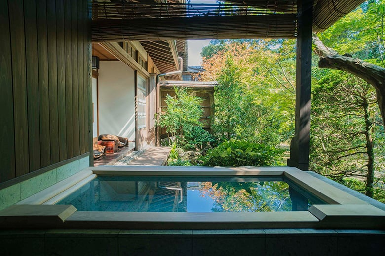
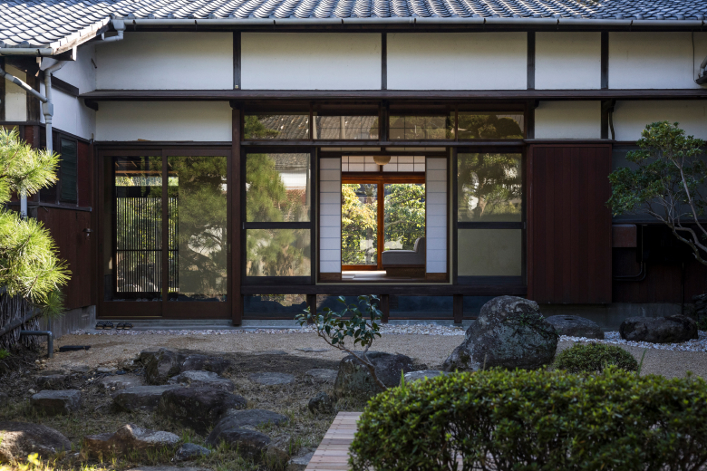

Travel that reveals the true essence of a place, beyond any guidebook. Ancient traditions,
aesthetics shaped by the land, and the rhythm of daily life.
Unravelling thousands of years of stories woven into the land.
Travel that reveals the true essence of a place, beyond any guidebook. Ancient traditions,
aesthetics shaped by the land, and the rhythm of daily life. By understanding the deep context
of a place, the familiar becomes your own extraordinary stage.

Access to the Inaccessible
The masters don't advertise. The spaces aren't listed.
Wabunka opens doors that remain closed to most —
private ateliers, sacred sites, and intimate encounters
with artisans who have spent lifetimes perfecting their craft.

More Than a Night's Stay
Sixteen guests said it best: getting to talk with the master
changes everything. Each Wabunka stay is built around a
genuine encounter — hands-on, fully involved, never just touristy.
You leave with something that cannot be bought: understanding.
The Private Aspect, By Design
Not open to the public. Not available elsewhere.
Every property and experience is curated for those who
value depth over novelty — where silence, craftsmanship,
and the rhythm of a place speak louder than any itinerary.
Featured Experiences
Sleeping Inside History — Stays Within Sacred Walls
A rare few places in Japan open their doors not just to visitors, but to those who wish to stay.
These are not hotels that evoke tradition — they are the tradition itself.
From kaiseki composed of mountain harvest to sake brewed in 300-year-old cellars — Japan's culinary
landscape is inseparable from its land, seasons, and the people who tend them.
Japan's temples were never meant for tourists. They were built for those seeking stillness. A night
within their walls — joining the monks' morning ritual, meditating before dawn — is among the rarest
experiences Japan can offer.
Guests from more than 110 countries have experienced our services.
🇳🇿 New Zealand
Kintsugi
A once in a lifetime chance to have a master of their craft teach you. You spend a day together learning so
many new things, all while being immersed in Japanese culture.
E.M
🇮🇹 Italy
Tea ceremony & Gastronomy
We loved the experience and couldn't recommend it more! It gave us a much deeper understanding of Japanese
culture and helped us connect with the local community.
A.R
🇦🇺 Australia
Noh
A unique experience, a lot of choices and well tailored to make it worth the cost. It was a chance to
experience and understand more about traditional Japanese culture.
R.K
🇺🇸 United States
Sake tasting
Everything is on high level with top ratings for the service. It is amazing experience! thank you!
A.W
🇨🇦 Canada
Vegetarian cuisine
From the website, to the booking process, to the email communication of the translator, to the location of
the teahouse, and to the actual experience — everything exceeded expectations.
A.C
🇺🇸 United States
Fermentation
Everything about the experience exceeded expectations. From the teacher, to the interpreter, to learning
about Kintsugi and its philosophy. Truly memorable.
K.D
Curated Stays
Begin your journey
Wabunka partners with discerning travelers to craft seamless, white-glove stays and insider access—quiet
luxury shaped by place, tradition, and the rhythm of daily life in Japan.

.jpg)
.jpg)
.jpg)